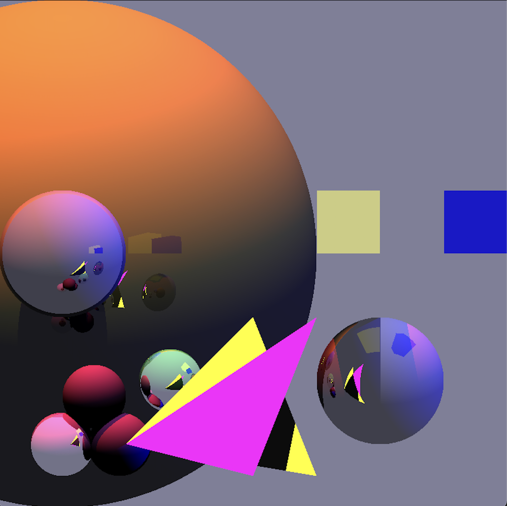

Ray Tracer
Digital Image Generator and File Writer
This program is the culmination of a semester long, individual project as part of a graphics class. The program has a CLI that I built to handle commands that can do a variety of tasks and run scripts. Additionally, it has commands that can read and write Tiff files. Writing the Tiff file reader/writer involved a deep dive into Tiff documentation and byte by byte parsing of files. You can also resize images which uses a Lanczos kernel as the base convolution kernel. Finally, I implemented a ray tracer which can:
- Create spheres, triangles, planes, and boxes
- Set screen dimensions, resize images
- Set orthographic cameras and custom cameras
- Set custom light sources and illuminate the scene

The ray tracer works by sending out rays from an origin that are then projected into the “image”. When the rays “hit” one of the objects in the image, the color, shading, and reflection are calculated (reflection is calculated through a reflection ray that goes through a similar process) and the color on the image is adjusted. This project took a large amount of physics-based programming and demanded I use multiple patterns and OOP strategies to keep my code organized and efficient. The photos on this page were both rendered using only my program. Code is available upon request!
